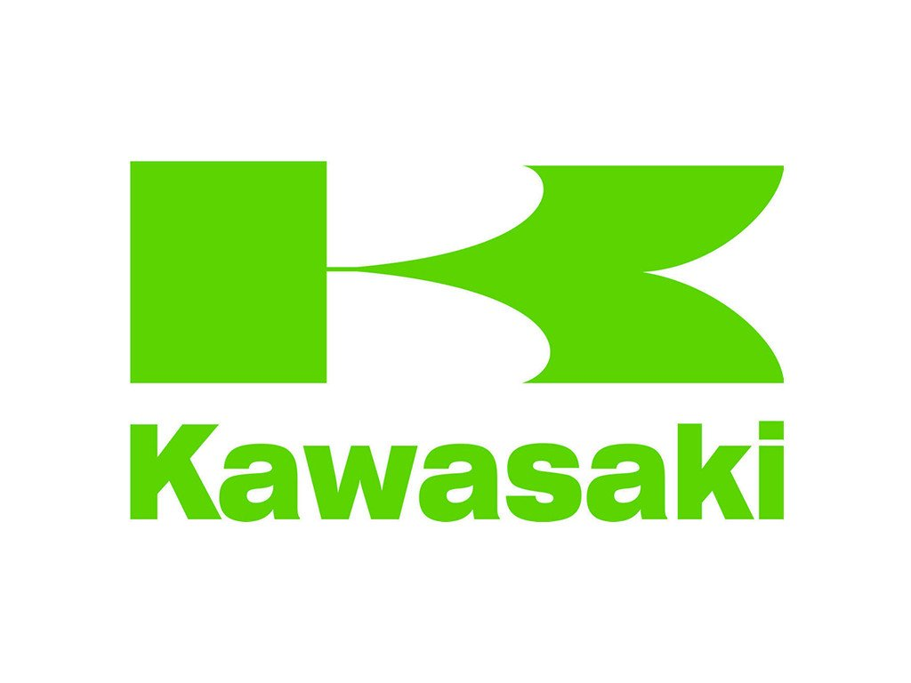

Article 1

Kawasaki Aircraft initially manufactured motorcycles under the Meguro name, having bought an ailing motorcycle manufacturer, Meguro Manufacturing with whom they had been in partnership. This eventually became Kawasaki Motor Sales. Some early motorcycles display an emblem with "Kawasaki Aircraft" on the fuel tank. During 1962, Kawasaki engineers were developing a four-stroke engine for small cars. Then some of the engineers transferred to the Meguro factory to work on the Meguro K1 and the SG, a single cylinder 250 cc OHV. In 1963, Kawasaki and Meguro merged to form Kawasaki Motorcycle Co.,Ltd.Kawasaki motorcycles from 1962 through 1967 used an emblem which can be described as a flag within a wing. Work continued on the Meguro K1, a copy of the BSA A7 500 cc vertical twin.[5] and on the Kawasaki W1. The K2 was exported to the U.S. for a test in response to the expanding American market for four-stroke motorcycles. At first it was rejected for a lack of power. By the mid-1960s, Kawasaki was finally exporting a moderate number of motorcycles. The Kawasaki H1 Mach III in 1968, along with several enduro-styled motorcycles to compete with Yamaha, Suzuki and Honda, increased sales of Kawasaki units. Kawasaki’s engines division, housed in a single office complex in Grand Rapids, Michigan, consolidates research and development projects for engines